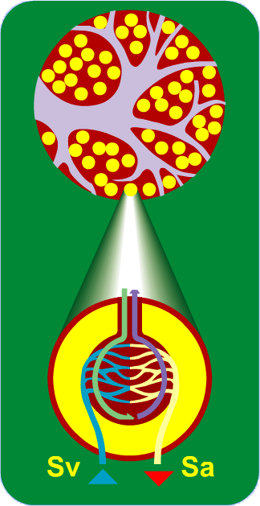
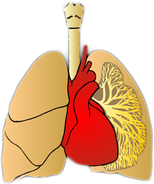

| HOMEPAGE | SISTEMI ED APPARATI | FASI DELLA VITA | ||
| HOMEPAGE | SISTEMI ED APPARATI | FASI DELLA VITA | ||
L'apparato respiratorio svolge la funzione fondamentale di trasferire ossigeno dall'atmosfera al sangue e anidride carbonica dal sangue all'atmosfera. E' formato da un insieme di organi cavi, le vie respiratorie (naso, bocca, faringe, laringe, trachea, bronchi), e dai due polmoni, organi parenchimatosi in cui avvengono gli scambi respiratori.
Distinguiamo una respirazione esterna, mediante la quale inspiriamo ed espiriamo aria nei polmoni attraverso le vie aeree, unarespirazione interna, a livello degli alveoli polmonari in cui avvengono gli scambi respiratori, e la respirazione di tutte le cellule del nostro corpo, la respirazione cellulare. L'apparato respiratorio è esposto a numerose patologie, causate soprattutto dai batteri, dai virus e dalle sostanze tossiche che vengono inalate insieme all'aria respirata.
Naso
La cavità nasale è divisa in due fosse nasali da un lembo verticale mediano chiamato setto nasale. Sulla faccia laterale di ciascuna fossa nasale sono presenti tre lamine ossee dette turbinati (ossa turbinate).
Le fosse nasali comunicano con l'esterno attraverso le narici, mentre posteriormente terminano in una fessura verticale a lato della parte superiore della faringe, sopra il palato molle e vicino agli orifizi delle trombe di Eustachio (che mettono in comunicazione la faringe con l'orecchio medio.
Sia le cavità nasali che le narici sono rivestite da mucosa, che produce muco, e le seconde anche da peli duri, detti vibrisse. Il muco e le vibrisse hanno la funzione di impedire il passaggio di corpi estranei, quali la polvere o piccoli insetti, che altrimenti potrebbero penetrare nelle vie respiratorie insieme all'aria inspirata. Il muco inoltre cede umidità all'aria che attraversa le cavità nasali, disidratandosi e trasformandosi in muco solido, ciò che noi comunemente chiamiamo caccole. La mucosa nasale, riccamente vascolarizzata, permette inoltre di riscaldare e inumidire ulteriormente l'aria in ingresso.
Bocca e faringe
La bocca e la faringe sono organi comuni all'apparato digerente e al respiratorio, in quanto sono attraversati sia dal cibo diretto all'esofago, sia dall'aria diretta ai polmoni.
In condizioni non patologiche la bocca viene utilizzata per la respirazione quando l'attività fisica è particolarmente intensa e ciò rende necessario un afflusso maggiore di aria ai polmoni.
Laringe
La laringe è il tratto delle vie aeree che fa seguito alla faringe e che continua con la trachea. Si trova nel collo, in posizione superficiale, ed è caratterizzata da uno scheletro cartilagineo, che la mantiene costantemente aperta permettendo il passaggio dell'aria.
Un lembo cartilagineo della laringe, l'epiglottide, impedisce il passaggio del cibo all'interno delle vie aeree e lo indirizza verso l'esofago. La laringe non è solo un organo deputato al passaggio dell'aria inspirata ed espirata, ma anche l'organo della fonazione. All'interno della laringe si trovano le corde vocali, costituite dai muscoli vocali, che delimitano uno spazio chiamato glottide, attraverso cui l'aria raggiunge la trachea.
La trachea è costituita da 16-20 anelli di tessuto cartilagineo sovrapposti che la mantengono costantemente aperta per permettere il passaggio dell'aria. Gli anelli cartilaginei che costituiscono la trachea sono incompleti, permettendo in questo modo l'espansione dell'esofago al momento della deglutizione. E' rivestita all'interno da un epitelio cigliato in cui sono presenti delle ghiandole mucose (epitelio respiratorio). Le ciglia si muovono verso l'alto e insieme al muco catturano i corpi estranei introdotti attraverso la respirazione: il muco intrappola il particolato (polvere, polline, batteri, ecc,) e deve essere eliminato, quindi portato verso l'alto. Le ciglia spingono il muco verso la laringe e poi verso l'esofago (e quindi nello stomaco, dove viene digerito) o verso la bocca e il naso, da cui viene espettorato con dei colpi di tosse.
Bronchi
I due bronchi si originano dalla biforcazione della trachea. A poca distanza dalla loro origine ogni bronco si divide in bronchi secondari che si dividono a loro volta dando luogo all'albero bronchiale. La struttura dei bronchi è simile a quella della trachea, con anelli cartilaginei. Anche nei bronchi è presente l'epitelio respiratorio.
I due bronchi non sono identici: il destro è di maggiore calibro (15-16 mm) del sinistro (10-11 mm).
Polmoni
Ciascun bronco primario penetra all'interno del rispettivo polmone, dando origine ad ulteriori, numerose, ramificazioni chiamate bronchioli. A loro volta, i bronchioli subiscono varie divisioni, fino a raggiungere, nel tratto terminale, le sacche alveolari, che riuniscono piccole vescicole chiamate alveoli. Per avere un'idea della complessità di queste diramazioni, basti pensare che ciascun polmone contiene all'incirca 150-200 milioni di alveoli.
Nel loro insieme la superficie degli alveoli è pari a circa 75 m² (la superficie di un appartamento di due locali e servizi). A livello degli alveoli avvengono gli scambi respiratori: i globuli rossi rilasciano l'anidride carbonica e assorbono l'ossigeno.
I polmoni sono i due principali organi della respirazione. Si trovano nella cavità toracica ai lati del cuore ed hanno la capacità di espandersi e ritrarsi seguendo i movimenti della gabbia toracica e del diaframma. Il polmone destro è di dimensioni maggiori del sinistro ed è diviso in tre lobi (superiore, medio ed inferiore), mentre quello sinistro ne possiede soltanto due (un lobo superiore ed uno inferiore). I polmoni sono costituiti da un tessuto spugnoso ed elastico, che ben si adatta alle variazioni di volume indotte dai movimenti respiratori.
I polmoni sono rivestiti da due sottili membrane, le pleure, fra le quali è interposto un sottile strato di liquido, che facilita lo scorrimento reciproco delle due pleure durante gli atti respiratori. L'inspirazione è la fase dell'atto respiratorio in cui l'aria ricca di ossigeno arriva ai polmoni, attraverso le vie respiratorie; l'espirazione invece è l'emissione dei "prodotti di scarto" quali anidride carbonica e vapore acqueo. La frequenza respiratoria corrisponde al numero di atti respiratori che si effettuano in un minuto, in media circa 15.
Il volume dei polmoni varia da individuo ad individuo, in relazione all'età, al sesso e alla taglia corporea. Nell'adulto raggiunge valori compresi tra i 3,5 ed i 7 litri. Durante un normale atto respiratorio viene inspirato ed espirato circa 1/2 litro d'aria; massimizzando le fasi di inspirazione ed espirazione è possibile arrivare fino a 2,5 - 5,5 litri. Al termine di un'espirazione completa all'interno dei polmoni e delle vie aeree rimane comunque un certo volume d'aria, stimabile in 1 - 1,2 litri (il cosiddetto volume residuo).
DANNI DEL FUMO
Che la sigaretta possa far male è noto a tutti.
L'Organizzazione Mondiale della Sanità ha inserito il tabacco fra le sostanze che determinano tossicodipendenza, al pari degli stupefacenti e dell'alcool.
Cosa succede quando si accende una sigaretta?
Le sostanze che si liberano durante la combustione si condensano sullo strato successivo di tabacco non ancora acceso così che, ad ogni aspirazione, la loro concentrazione aumenta, e alla fine il loro contenuto relativo è circa 4 volte superiore che all'inizio.
Il fumo emesso direttamente dalla combustione del tabacco contiene concentrazioni maggiori di sostanze tossiche rispetto alla frazione di fumo espirata. Ciò è dovuto al fatto che durante l'inalazione il tabacco è bruciato ad una temperatura più alta che consente una più completa combustione degli agenti tossici in esso contenuti.Cosa contiene il fumo di sigaretta?
Il fumo di tabacco contiene circa 4000 sostanze chimiche, alcune delle quali hanno caratteristiche cancerogene. Nella tabella sono riportate quelle che possono determinare l'insorgenza di diverse patologie.
Oltre a contenere sostanze dannose per la salute, le sigarette contengono una vera e propria droga: la nicotina. La nicotina è un alcaloide naturale, presente nel tabacco in una percentuale che va dal 2 all'8%.
La nicotina contenuta in una sigaretta, tra 0,05 mg e 1 mg a seconda delle marche, dà dipendenza fisica!La nicotina ha un effetto stimolante e, in grandi quantità, calma e distende i muscoli. La nicotina riduce inoltre l'appetito, l'ansia e l'aggressività. Non appena si accende una sigaretta, si libera della nicotina. Questa sostanza, combinata con il catrame, arriva nei polmoni, prima di circolare nel sangue. Dopo 7 secondi, le molecole di nicotina arrivano al cervello e il suo effetto dura per qualche minuto. In caso di stanchezza una sigaretta può dare la carica; può anche far sparire le piccole paure e le tensioni. Il tabacco agisce quindi sia come stimolante che come calmante. Poco dopo, però, subentra un effetto deprimente che spinge a fumare ancora per provare di nuovo gli effetti positivi.